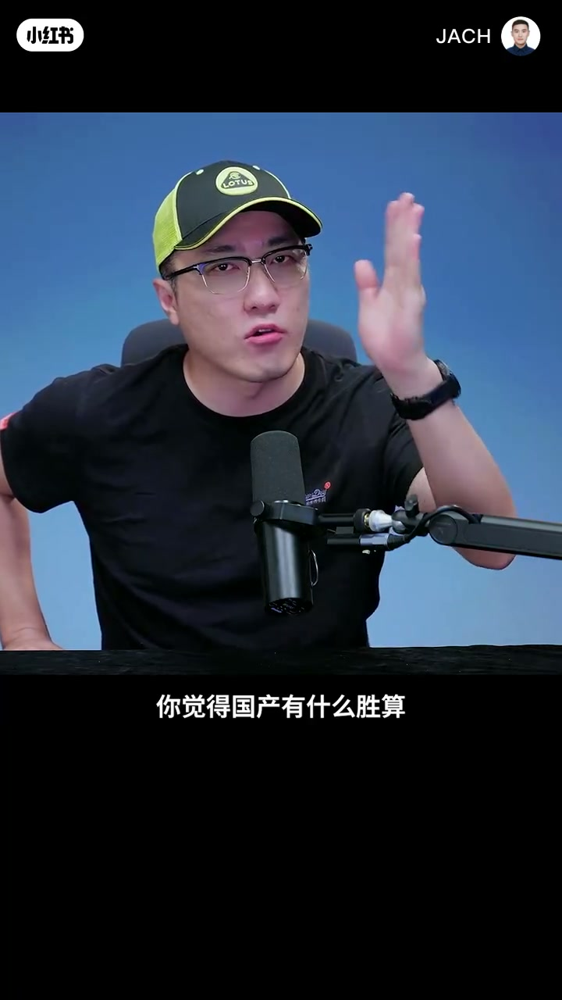
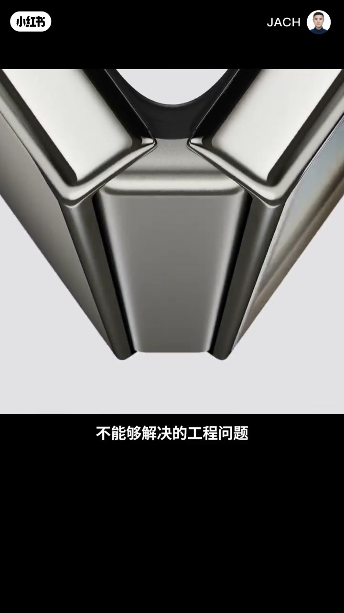
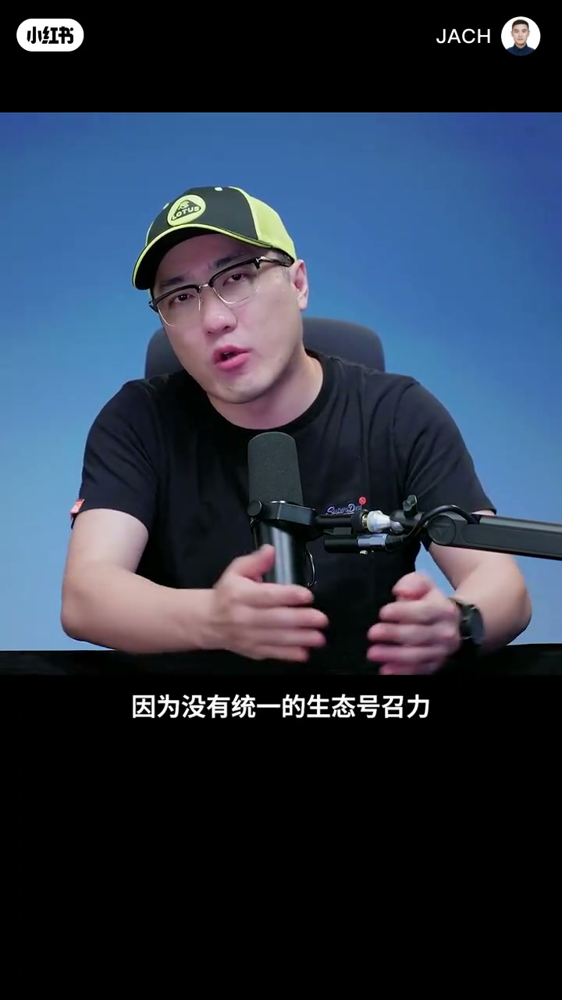
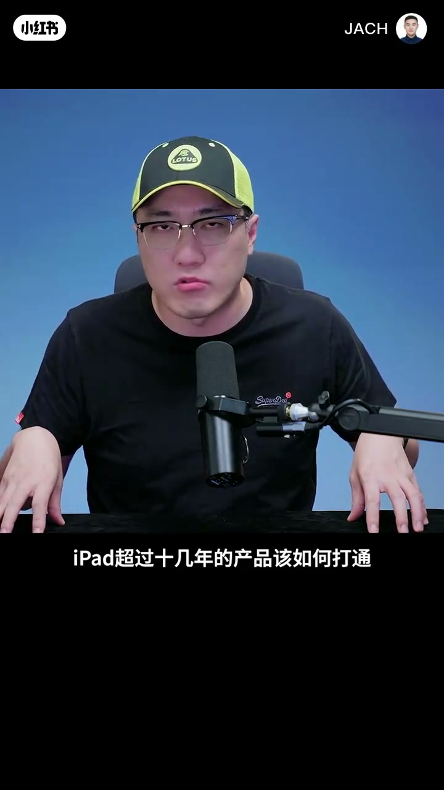
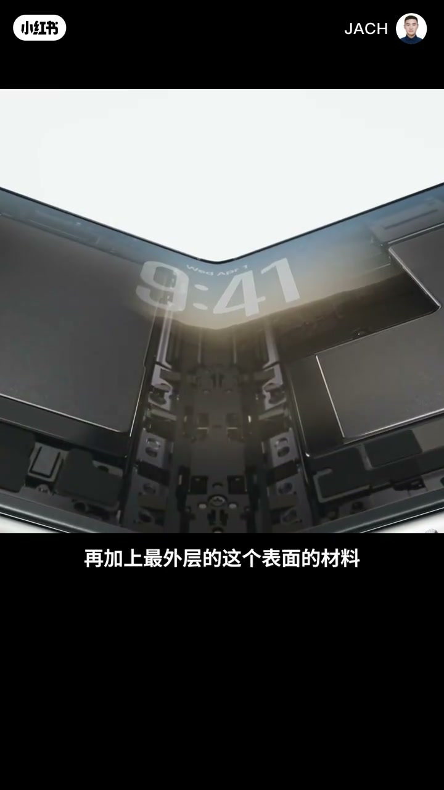
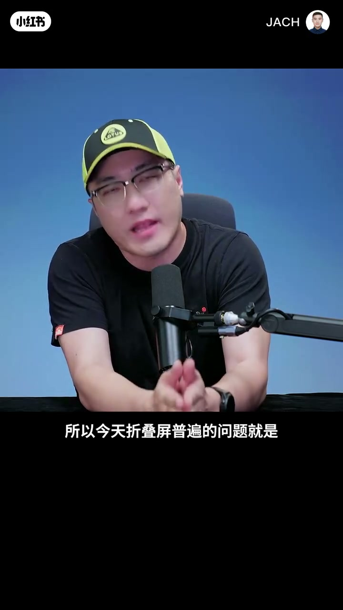
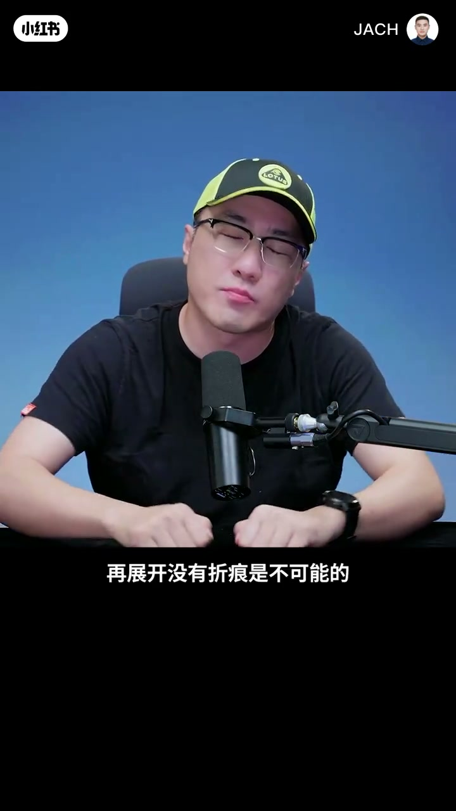
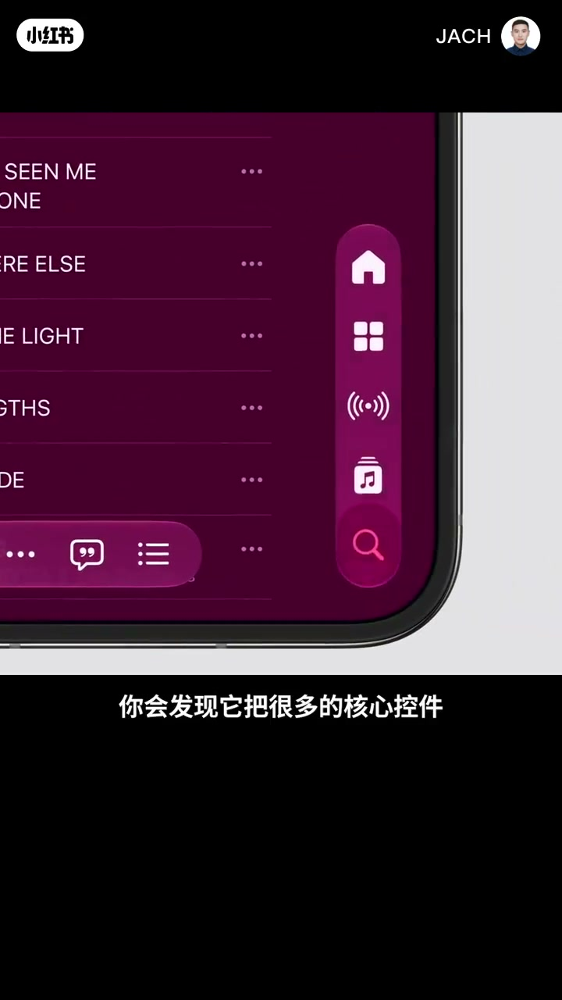

内容要点
王自如（账号 JACH）围绕苹果折叠屏 iPhone Duo 谈三点期待与工程现实：社交货币与差价竞争、窗口管理与生态七成体验、以及柔性 OLED 基底—表面位移、胶水与材料疲劳如何必然带来折痕。他肯定苹果在陶瓷镀膜、更硬基底与层叠结构上的工程，以及外屏「地字形」、右侧桌面逻辑、App Bundle 分屏等「只有苹果敢做」的交互自信，并称这让国产阵营「该服」。
知识结构
苹果折叠屏是社交货币；国产同价甚至三折也难当；差价两千内国产胜算被质疑。
工程痛点能否被苹果供应链解决；展开后窗口管理甜蜜点；生态号召力补足七成体验。
苹果同时在移动与 PC 存活二十年以上，经验如何与十几年 iPad 产品线打通。
柔性 OLED 基底是特殊塑料；折叠位移须用胶与韧性妥协刚性→塑料感、波纹、折痕。
材料疲劳→分子级断裂不可逆；纸张对折比喻；铰链长时间夹持必然留痕。
陶瓷镀膜+硬基底层叠；地字形外屏、右侧桌面逻辑、Bundle 分屏——供应链与工程力让国产该服。
折叠屏难在「可折」与「直板手感」同时成立：柔性层必然位移与疲劳，折痕难消灭；苹果若用供应链把屏结构与生态七成补齐，再叠加只有它敢做的交互造型，差价不大时社交货币与体验叙事会对国产形成强压力。
00:00-01:40社交货币与三个好奇点
开场判断：苹果折叠屏至少在当下一定是社交货币；花一万六买国产折叠屏当不了社交货币，国产三折叠也一样。若苹果与国产差价在两千元以内，忽略容量（哪怕国产 16k 买 2T、苹果同价只有 256），他质疑国产还有什么胜算。
形态本身不新鲜，行业已存在很久。人们期待苹果，一是多年迭代后仍未解决的工程痛点，能否被苹果供应链与工程能力拿下；二是展开后更大内屏的窗口管理与交互甜蜜点；三是厂商窗口管理只占三成，生态占七成——安卓因隔离、缺统一号召力与审查标准，开屏体验一直难做好，苹果生态会否补足这七成并带来新花样。


01:40-04:18跨端经验、柔性屏位移与折痕必然
他好奇苹果作为同时在移动端对安卓、在 PC 端对微软都存活二十年以上（PC 甚至三十多年）的公司，如何把这些经验与十几年 iPad 产品线打通——这是关键能力。
形态上苹果借鉴了已有折叠交互：内外屏协同、屏下摄像头、内外屏过渡与分工。屏幕工程上：柔性 OLED 基底是特殊塑料，内折半径要可折就不能用刚性材料；发光层、保护层与表面都必须柔性。难点在基底与表面折叠时的微小位移：内层折角更锐、外层更圆，层间被「卷」出位移，须靠胶固定并用材料韧性解决，从而妥协表面硬度——于是展开后塑料感重、有波纹与折痕、边角较厚需保护。
折痕另一根源是材料疲劳：金属、塑料都会疲劳，出现不可修复的分子级断裂。他用 A4 纸对折比喻：折过就不可能恢复原样。屏幕被机械铰链与磁吸长时间夹持，再展开没有折痕是不可能的。




04:18-05:26苹果屏结构与「只有苹果敢做」的交互
他认为苹果屏结构强，在于表面陶瓷镀膜与像素级雕刻、底下更硬的基底，再层层叠加，尽量在可折叠的同时接近直板机硬度与触感——这才是难点，非常了不起。
更公允的一面：很多做法只有苹果敢干。例如外屏「地字形」造型，若安卓提前两天发一定会被喷、还可能被骂抄苹果。这是交互自信；内屏把核心空间放在右侧，像苹果桌面/电脑应用逻辑；分屏与两 App 组合成 Bundle，以及状态栏只留时间、信号强度等集合呈现，都是典型苹果逻辑。收束：所谓国产「该服」，是苹果超强供应链与工程能力带来的结果。


完整转录（60段）
以下文本由 Whisper medium 模型自动转录，可能存在少量识别误差，已尽可能修正。
苹果的折叠评 至少在今天这个阶段下 一定是社交货币
但是你16000买个国产折叠评 你不能当社交货币
你就是买个国产三折叠 你也当不了社交货币
苹果这只折叠评 如果差价跟国产在2000元以内
你觉得国产有什么胜算 我说的在不在理
我讲的是忽略容量问题 就是哪怕我国产16000 我买2t
然后苹果16000 我只能买256的情况下 你选苹果 选国产
折叠评的形态本身不新鲜 大家都见过 这个形态已经存在很久了
当年的我的awesome 你们还应该还记得 对吧
然后第二个问题呢 很重要的一点就是说 大家一直都期待苹果出这个原因
是因为折叠评经过了几年的迭代行业当中 依据有很多的难点和痛点不能够被解决
人们很期待这些其他阵营当中不能够解决的工程问题
苹果是否会通过他的供应链和他超强的工程能力得到解决 这是大家期待的第一个点
他切二 第二个点就是说 折叠评在使用的过程当中 一直会有很多的痛点
大家一直没思考清楚 比如说展开了之后 内屏更大的空间 更大的尺寸
到底怎样的窗口管理更合理 怎样的交互方式才是生产力和体验的最佳的甜蜜点
第三个问题也很重要 那就是说 厂商不管在窗口管理上做了多少的工作
你依旧需要庞大的生态号召力 让开发者真正的愿意支持你在折叠评展开下的这种状态
而安卓生态之下 因为它的隔离性质 因为没有统一的生态号召力和统一的app的审查标准
这种结果一直都没能做的出来 也就是说开屏之后的体验好与坏
它其实是厂商做三成 生态做七成 就引出了我刚才讲到第二好奇点
就是说在苹果强大的生态的能力之下 会不会把这七成的生态能力补足了以后
在折叠评上带来新的花样和想法
然后呢 第三个问题大家比较好奇的 至少是我好奇的
就是说苹果可能是今天世界上唯一一个在移动端 包括在电脑端都有着绝对的经验和沉淀的一个企业
在移动端跟安卓竞争 在pc端跟微软竞争 他他都在两个平台上都存活超过20年以上
那pc的平台甚至超过30年 那么这些经验如何打通ipad超过十几年的产品该如何打通
这是非常关键的一个能力 刚才我们看到的几个核心的价值在几个地方
第一个就是确实就是说这个形态上他借鉴了大量的目前已经在折叠屏上沉淀的交互方式
比如说内外屏的合作 协同 比如说我们看到的屏下的摄像头
内屏外屏的这个过渡以及分工和交互上的这个差异
第二个非常有价值的地方就是确实在屏幕这块的工程上花了大量的工作
因为我们都知道欧莱的屏幕是怎么做的呢 柔性的欧莱的屏幕它的基底它其实就是一层塑料
当然是特殊的技术材料的塑料 它保证柔性的欧莱的可以进行大范围的折叠
我们说里边的内角的c角 你要为了保证屏幕可折叠 你的这底下就不能是刚性材料
然后呢 如果你不用刚性材料 中间经过发色材料 经过这个保护层
再加上最外层的这个表面的材料 都必须是柔性的 它保证内外的屏可以折叠
第二个很重要的一个点是什么呢 就是折叠屏的难度是在于你的基底材料和表面材料之间
在屏幕折叠的时候会有位移 位移是什么意思呢 即便它大概只有两毫米厚一毫米厚
它是在折叠起来的过程当中 就是表面这层材料它折叠起来的之后 它的这个转折的折角会更加的锐利
外层稍微的会圆润一点点 你就会导致里边这一层被卷去的很严重的 它会产生微小的位移
那么为了保证这一些 你必须要通过胶的方式把它固定在一起 利用材料的韧性来解决这个位移问题 那么你要怎么做呢 你就得妥协材料的刚性
因为这个材料的表面的硬度不够 所以今天折叠屏普遍的问题就是内屏展开了之后 塑料感很重
会有波纹呢 会有折痕呢 对吧 然后边角相对较厚啊 需要有保护啊 等等等等
那折痕是怎么来的呢 折痕一方面是我刚才讲的 你的基地材料加表面的保护材料都必须是柔性的
还有一个很重要的原因是因为材料本身 不管你的什么材料 只要是地球上产生的人类造的 都会不可避免的产生一个词叫做疲劳
材料本身的疲劳 金属有基础的疲劳 塑料有塑料的疲劳 那么疲劳了之后就会出现什么 我们叫分子级断裂 分子级断裂是不可修复的 一旦产生就不可能
我举个例子 大家玩过纸没有 一张a四纸 你不折它就没有 只要你折了它 它就一定不可能恢复成原来的样子 明白我的意思吗 分子级断裂
所以那么一个屏幕 它在内部长时间背着这个所谓的机械脚链和屏幕的磁吸夹住的时候
长时间就会达到这种疲劳以及微小的分子级断裂 再展开没有折痕是不可能的
所以刚才为什么我讲他的屏幕结构非常强 就是刚才讲到了他第一个表面的这个陶瓷的镀膜 像素级的这个雕刻 第二个就是底下的这个硬性的基地材料
中间再加了更多的这种结构 然后层层的叠加来保证说 尽可能的让这个屏幕在展开了之后 能够有我们平时用到的这种直板手机的硬度和触感
但同时又能保证它折叠 这才是难点 我认为非常了不起 那么第三个我要讲的问题就比较公允 比较理性的一个角度 有很多的做法确实只有苹果才敢干
这个咱也不能说安卓阵营就没有创新的想法 你比如说外屏的地字形造型 就这件事一定会被喷死的
如果说有人提前两天发布 你就说是苹果超他 你觉得可能吗 对吧 这是不可能的
所以地字形这件事 除了他以外 我觉得应该大部分的人都是所谓标准的外屏结构的造型
这是首先是一个交互上的一个自信 然后第二个就是他的内屏 你会发现他把很多的核心空间放在了右侧 其实典型的我们说的苹果桌面及电脑的应用逻辑
然后比如说像刚才的这个分屏机制和两个app组合变成一个bundle这样的方式
这就是典型的苹果的交互设计上敢做的一些创新 包括他的上面的信号只留时间 把他的什么强度这些东西集合在一起 这也是很典型的苹果逻辑
所以为什么说是国产严复 就是确实刚才这个体现出来就是苹果超强的供应链和工程能力所带来的结果